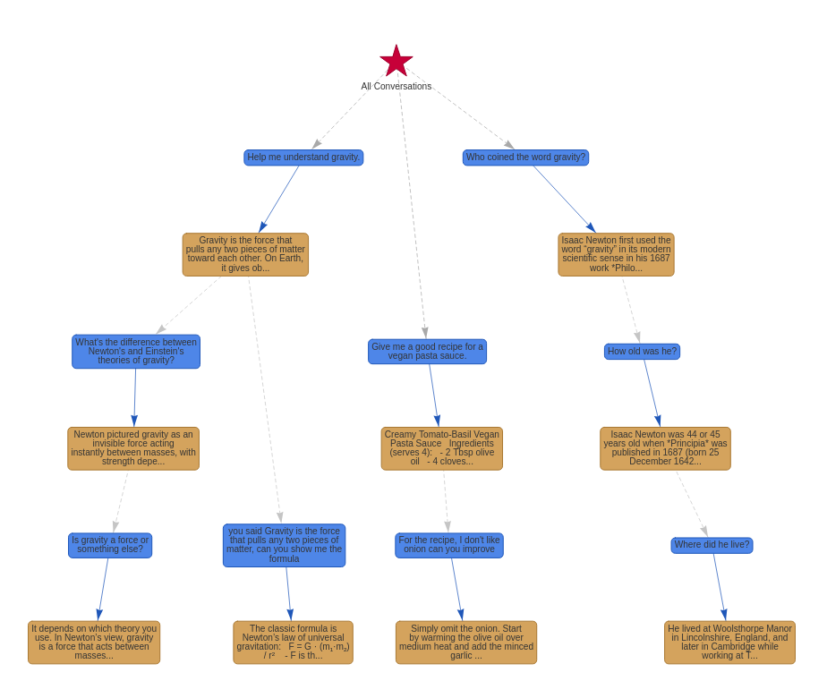

!uv pip install dspy networkx pyvis anytree plotlyHow to Build an Automatically Branching Chat with DSPy
2025-07-07

The other day it occurred to me that most people building AI products (chatbot-like experiences) were not building AI programs. I then wondered: ‘what would they need to build for their program to be an AI program?’ I think the answer is they need to have AI contributing to the control flow of the application. A nice way to illustrate that is to have an AI deciding where my prompt goes in a growing tree of conversations instead of having code and buttons decide that.
In this blog we will build a complete and working branching chat application. My intuition is that this is an important piece missing to AI chat currently. I don’t want to have to search for a conversation like if it was 2023 ;)
To build an automatically branching chat we will need 4 pieces.
- We need a data structure that will hold the chat tree.
- We need a conversation router that will decide where the user’s prompt gets connected in the tree.
- We need an interface for the user to chat.
- We need a way to build back the relevant conversation trace into an LLM-ready conversation.
Setting up
For this tutorial, you will need to install a few libraries and setup an LLM connection. The LLM will be the one that organizes the chat and the one you chat with. If you use a locally hosted model, (you can!) simply skip the setting up of the API key. Click here to get a key.
For this tutorial, I have chosen Kimi-K2 hosted by Groq. This is pretty cheap, very fast, and pretty smart!
Conversation Tree
This section has nothing to do with AI and DSPy, we are simply going to create our conversation tree data structure.
At its core each prompt-response pair will be independently save into a Turn object. This object will also hold to its own id, the id of its parent and the ids of its children (in a list).
It looks like that:
import pydantic
from typing import List, Optional, Dict
class Turn(pydantic.BaseModel):
turn_id: int
parent_turn_id: Optional[int]
user: str
assistant: str
children_ids: List[int] = pydantic.Field(default_factory=list)
turn_i = Turn(
turn_id = 0,
parent_turn_id = None,
user = "Help me understand gravity.",
assistant = "Gravity is the force that pulls any two pieces of matter toward each other. On Earth, it gives objects weight and keeps us on the ground. In space, it keeps the Moon orbiting Earth and the planets orbiting the Sun. According to Einstein, massive objects actually bend the fabric of space-time, and what we feel as gravity is simply objects following the curved paths created by that bending."
)print(turn_i.model_dump_json(indent=2)){
"turn_id": 0,
"parent_turn_id": null,
"user": "Help me understand gravity.",
"assistant": "Gravity is the force that pulls any two pieces of matter toward each other. On Earth, it gives objects weight and keeps us on the ground. In space, it keeps the Moon orbiting Earth and the planets orbiting the Sun. According to Einstein, massive objects actually bend the fabric of space-time, and what we feel as gravity is simply objects following the curved paths created by that bending.",
"children_ids": []
}As you can see, it can have a parent turn id of null. We will use parent_turn_id == None to identify if a turn is a new chat (a.k.a. root).
To see how our program works as we are building it, we will create and fill up a conversation tree right away. Let’s use the same conversation tree as the one in the images above.
Here we are creating a conversation tree object to help us find tips, roots, and collect turns from a tip until a certain depth. If you follow along, you will need to copy and paste and run them, but you do not need to understand them to understand the tutorial.
defining the ConversationTree object
import pydantic
from typing import List, Optional, Dict
class Turn(pydantic.BaseModel):
turn_id: int
parent_turn_id: Optional[int]
user: str
assistant: str
children_ids: List[int] = pydantic.Field(default_factory=list)
class ConversationTree:
def __init__(self):
self.turns: Dict[int, Turn] = {}
def add_turn(self, turn: Turn):
self.turns[turn.turn_id] = turn
if turn.parent_turn_id is not None:
parent_turn = self.turns[turn.parent_turn_id]
parent_turn.children_ids.append(turn.turn_id)
def create_turn(self, user: str, assistant: str, parent_turn_id: Optional[int] = None) -> int:
"""
Convenience method to create and add a new turn with auto-generated turn_id.
Args:
user: The user's message
assistant: The assistant's response
parent_turn_id: Optional parent turn ID (None for root turns)
Returns:
The generated turn_id of the newly created turn
"""
# Generate new turn_id
if self.turns:
new_turn_id = max(self.turns.keys()) + 1
else:
new_turn_id = 0
# Create and add the turn
turn = Turn(
turn_id=new_turn_id,
parent_turn_id=parent_turn_id,
user=user,
assistant=assistant
)
self.add_turn(turn)
return new_turn_id
def get_turn(self, turn_id: int) -> Turn:
return self.turns[turn_id]
def get_root_turns(self) -> List[Turn]:
return [turn for turn in self.turns.values() if turn.parent_turn_id is None]
def get_leaf_turns(self) -> List[Turn]:
return [turn for turn in self.turns.values() if len(turn.children_ids) == 0]
def trace_upward(self, turn_id: int, depth: int = 4) -> List[Turn]:
trace = []
current = self.get_turn(turn_id)
while current and len(trace) < depth:
trace.append(current)
if current.parent_turn_id is not None:
current = self.get_turn(current.parent_turn_id)
else:
break
return trace[::-1] # reverse to get root to leaf order
def trace_downward(self, turn_id: int, depth: int = 4) -> List[List[Turn]]:
traces = []
def dfs(current_id, current_trace):
if len(current_trace) == depth:
traces.append(current_trace[:])
return
current_turn = self.get_turn(current_id)
if not current_turn.children_ids:
traces.append(current_trace[:])
return
for child_id in current_turn.children_ids:
dfs(child_id, current_trace + [self.get_turn(child_id)])
dfs(turn_id, [self.get_turn(turn_id)])
return tracesconversation_tree = ConversationTree()
conversations = [
Turn(turn_id=0, parent_turn_id=None, user="Help me understand gravity.", assistant="Gravity is the force..."),
Turn(turn_id=1, parent_turn_id=0, user="What's the difference between Newton's and Einstein's theories of gravity?", assistant="Newton pictured gravity..."),
Turn(turn_id=2, parent_turn_id=1, user="Is gravity a force or something else?", assistant="It depends on the theory..."),
Turn(turn_id=3, parent_turn_id=0, user="you said Gravity is the force that pulls any two pieces of matter, can you show me the formula", assistant="Newton’s universal law..."),
Turn(turn_id=4, parent_turn_id=None, user="Give me a good recipe for a vegan pasta sauce.", assistant="Creamy Tomato-Basil Vegan Pasta Sauce..."),
Turn(turn_id=5, parent_turn_id=4, user="For the recipe, I don't like onion can you improve", assistant="Creamy Tomato-Basil Vegan Pasta Sauce (No-Onion Version)..."),
Turn(turn_id=6, parent_turn_id=None, user="Who coined the word gravity?", assistant="Isaac Newton first used..."),
Turn(turn_id=7, parent_turn_id=6, user="How old was he?", assistant="Isaac Newton was 44–45 years old..."),
Turn(turn_id=8, parent_turn_id=7, user="Where did he live?", assistant="He lived in England..."),
]
for conv in conversations:
conversation_tree.add_turn(conv)Now that we have a data structure (the turns and tree) we can focus on the interesting part, the conversation router!
Conversation Router
The conversation router is responsible for taking our prompt and the conversation tree and finding where our prompt should attach itself to the tree.
In my original system, I used some sort of tournament and weighted the relevance of the roots and the tips, and for the top X most relevant conversation trace I would look inside the conversations and try to find the point of connection. Doing something hierarchical like that would help the solution scale to a very big tree. Here we will keep it VERY simple; we will rank and evaluate the relevance of each all possible conversation traces of at most 3 turns at once (in a sort of sliding window).
Collecting & rendering traces to string
In our conversation_tree class definition above we created a method to collect the turns above a given turn, so we can do that here.
traces = []
for (id, i_turn) in conversation_tree.turns.items():
traces.append(conversation_tree.trace_upward(turn_id=id, depth=3))
print(traces[0])[Turn(turn_id=0, parent_turn_id=None, user='Help me understand gravity.', assistant='Gravity is the force...', children_ids=[1, 3])]In the case of the first trace (the one printed just above here), the turn in question had no parent, so a trace of one turn was returned. This is what we want. The subsequent turn was a turn just below turn 0, so we get two turns in that trace: turn 0 and turn 1, and so on for all turns in the tree.
print(traces[1])[Turn(turn_id=0, parent_turn_id=None, user='Help me understand gravity.', assistant='Gravity is the force...', children_ids=[1, 3]), Turn(turn_id=1, parent_turn_id=0, user="What's the difference between Newton's and Einstein's theories of gravity?", assistant='Newton pictured gravity...', children_ids=[2])]We could probably show these to the LLM, but I think we can render them into something a little more readable. Something like this:
<trace id="2">
## User:
Help me understand gravity.
## Assistant:
Gravity is the force...
## User:
you said Gravity is the force that pulls any two pieces of matter, can you show me the formula
## Assistant:
Newton’s universal law...
</trace>
<trace id="3">
## User:
Give me a good recipe for a vegan pasta sauce.
## Assistant:
Creamy Tomato-Basil Vegan Pasta Sauce...
## User:
For the recipe, I don't like onion can you improve
## Assistant:
Creamy Tomato-Basil Vegan Pasta Sauce (No-Onion Version)...
</trace>Here is the code to do that for all of them at once and get one big string for the llm.
def format_trace(trace: List[Turn]) -> str:
trace_string = ""
for turn in trace:
trace_string += "\n\n## User: \n\t" + turn.user + \
"\n\n## Assistant: \n\t" + turn.assistant + "\n"
return trace_string
def format_traces_with_id(traces):
count = 0
all_traces_string = ""
for trace in traces:
count += 1
all_traces_string += f"<trace_id = {count}>\n" + \
format_trace(trace)+ \
f"\n</trace_id = {count}>\n"
return all_traces_string
stringi_traces = format_traces_with_id(traces)Build the ranking program
Now that we have all conversation segments (traces), we can rank them by relevance.
We’ll feed the LLM the user’s prompt and all the segments, and ask for three things back: a rank (1 is best), a relevance score from 0 to 1, and a temporary trace ID so we know which score belongs to which segment.
That gives us:
Inputs:
- current user prompt (string)
- traces (string)
- current user prompt (string)
Outputs:
- a sorted list of evaluations, each with rank (int), trace id (int), relevance score (float 0–1)
Let’s turn this into a DSPy program. First, define a class that tells DSPy and the LLM exactly what to return.
class SegmentEvaluation(pydantic.BaseModel):
trace_id: int
relevance_to_prompt: float
ranked_relevance_to_prompt: intNow we are finally using DSPy!
let’s import it:
import dspyHere we write our program’s instructions, inputs and outputs as a DSPy signature. In DSPy, the signature takes the place of the usual prompt. In the signature we can use the docstring to give instructions. This instruction will be added to a system prompt behind the scenes before calling the llm1. Other than the signature you have Inputs and Outputs. These are defined by creating attributes in the class you are creating and making those equal to either InputField or OutputField. The name that you give to the attributes will be shown to the llm. These will be added to the system prompt where their name, type and description is spelled out. They will also be used in the user messages and the llm will be instructed to use them2.
1 although we won’t be running any DSPy optimizer in this tutorial, the instruction part of the signature is the main element that the optimizers can modify and improve
2 the inputs and outputs fields are NOT modified by DSPy optimizers, they are simply ‘rendered’ into a text prompt by DSPy’s adapters
class EvaluateSegments(dspy.Signature):
"""Evaluate a conversation segments for relevance to a new prompt.
For each segment, identify if has topical connection to the user prompt. Consider if the prompt is:
- A direct follow-up question.
- A request for clarification.
- An exploration of a related sub-topic.
- A completely different subject.
Assign a relevance score from 0.0 (completely irrelevant) to 1.0 (a direct continuation of the topic).
You will also rank the segments where 1 is the most relevant of the group
"""
#Inputs
user_prompt: str = dspy.InputField(desc="The new user prompt to be integrated.")
segments_to_evaluate: str = dspy.InputField(desc="A stringified list of conversation segments, each with its trace_id and content.")
#Outputs
evaluations: List[SegmentEvaluation] = dspy.OutputField(desc="A list of evaluations, one for each segment, including detailed reasoning.")Now to make that signature callable we have to make it into a module3. The simplest one is dspy.Predict, let’s use that.
3 there are lots of off the shelf modules in DSPy and you can, should, and will define your own. Modules are where you define the logic and control flow around the llm calls. Modules are often called Programs and DSPy’s optimizers can optimize whole modules and modules inside of modules and so on all the way down
relevance_evaluator = dspy.Predict(EvaluateSegments)We are almost ready to call an AI but we first need to set up our language model.
Connecting to different models and providers in DSPy is very easy. You just have to change groq/moonshotai/kimi-k2-instruct for the path to the provider and model you want. Behind the scenes, DSPy uses litellm so this path is one that would work with litellm4
4 for instance you could do gpt-4.1, or ollama/<ollama_model>
lm = dspy.LM("groq/moonshotai/kimi-k2-instruct")
dspy.configure(lm = lm)evaluation = relevance_evaluator(
user_prompt = "how much salt should I use?",
segments_to_evaluate = format_traces_with_id(traces)
)
evaluationPrediction(
evaluations=[SegmentEvaluation(trace_id=1, relevance_to_prompt=0.0, ranked_relevance_to_prompt=9), SegmentEvaluation(trace_id=2, relevance_to_prompt=0.0, ranked_relevance_to_prompt=8), SegmentEvaluation(trace_id=3, relevance_to_prompt=0.0, ranked_relevance_to_prompt=7), SegmentEvaluation(trace_id=4, relevance_to_prompt=0.0, ranked_relevance_to_prompt=6), SegmentEvaluation(trace_id=5, relevance_to_prompt=0.4, ranked_relevance_to_prompt=5), SegmentEvaluation(trace_id=6, relevance_to_prompt=0.6, ranked_relevance_to_prompt=4), SegmentEvaluation(trace_id=7, relevance_to_prompt=0.0, ranked_relevance_to_prompt=3), SegmentEvaluation(trace_id=8, relevance_to_prompt=0.0, ranked_relevance_to_prompt=2), SegmentEvaluation(trace_id=9, relevance_to_prompt=0.0, ranked_relevance_to_prompt=1)]
)DSPy always returns a Prediction5. Let’s get our list of evaluations out of evaluation. Since we used type hints to tell DSPy that we wanted List[SegmentEvaluation], it made sure this is what we got6
5 Predictions are necessary because some programs add to your outputs and you may have multiple outputs
6 If you are working with a smaller model, the model may struggle to output the required structure, using TwoStepAdapter may help dspy.configure(lm = lm, adapter = dspy.TwoStepAdapter(lm))
evaluation.evaluations[SegmentEvaluation(trace_id=1, relevance_to_prompt=0.0, ranked_relevance_to_prompt=9),
SegmentEvaluation(trace_id=2, relevance_to_prompt=0.0, ranked_relevance_to_prompt=8),
SegmentEvaluation(trace_id=3, relevance_to_prompt=0.0, ranked_relevance_to_prompt=7),
SegmentEvaluation(trace_id=4, relevance_to_prompt=0.0, ranked_relevance_to_prompt=6),
SegmentEvaluation(trace_id=5, relevance_to_prompt=0.4, ranked_relevance_to_prompt=5),
SegmentEvaluation(trace_id=6, relevance_to_prompt=0.6, ranked_relevance_to_prompt=4),
SegmentEvaluation(trace_id=7, relevance_to_prompt=0.0, ranked_relevance_to_prompt=3),
SegmentEvaluation(trace_id=8, relevance_to_prompt=0.0, ranked_relevance_to_prompt=2),
SegmentEvaluation(trace_id=9, relevance_to_prompt=0.0, ranked_relevance_to_prompt=1)]Let’s now find the most relevant turn
best_eval = max(evaluation.evaluations, key=lambda x: x.relevance_to_prompt)
most_relevevant_turn = traces[best_eval.trace_id-1][-1]
most_relevevant_turnTurn(turn_id=5, parent_turn_id=4, user="For the recipe, I don't like onion can you improve", assistant='Creamy Tomato-Basil Vegan Pasta Sauce (No-Onion Version)...', children_ids=[])We have our first LLM-generated data!
Connection decision
We will now be using that in our program logic and control flow. We could always attach to the most relevant, but sometimes we are actually starting a new conversation. So let’s make a second program, one that will look at the most relevant conversation segment and decide if it attaches there or starts a new conversation
class NewChatDecision(dspy.Signature):
"""
You are a classifier inside of an automatically branching chat application.
The most relevant branch in a conversation tree has been identified.
Given that conversation and a user prompt, you must decide if we should start a new conversation
or if we should attach the prompt the most relevant conversation.
"""
user_prompt: str = dspy.InputField()
relevance_score: float = dspy.InputField()
conversation: str = dspy.InputField()
decision: bool = dspy.OutputField(desc = "Return true for a new conversation, false to attach to this conversation")Just like for the conversation relevance ranker, we turn our signature into a callable program with Predict and we run the program.
new_chat_decider = dspy.Predict(NewChatDecision)
decision = new_chat_decider(
user_prompt = "how much salt should I use?",
relevance_score = best_eval.relevance_to_prompt,
conversation = format_trace(conversation_tree.trace_upward(most_relevevant_turn.turn_id, 100)),
)
decisionPrediction(
decision=False
)Kimi-K2, our AI, suggests that we do NOT start a new conversation. So we would then add our current prompt to that conversation trace and send the query to a simple chat program.
Chat bot
class ChatBot(dspy.Signature):
"""You are a helpful assistant"""
history: dspy.History = dspy.InputField()
user_prompt: str = dspy.InputField()
assistant_response: str = dspy.OutputField()Our chatbot will need the conversation history to properly respond so let’s create a message list. DSPy offers History, a DSPy Type to help us with that. It will turn the history into actual user and assistant messages for us even though we did not use the expected role name.
messages = []
for turn in conversation_tree.trace_upward(most_relevevant_turn.turn_id, 100):
messages.append({"user_prompt": turn.user, "assistant_response": turn.assistant})
messages[{'user_prompt': 'Give me a good recipe for a vegan pasta sauce.',
'assistant_response': 'Creamy Tomato-Basil Vegan Pasta Sauce...'},
{'user_prompt': "For the recipe, I don't like onion can you improve",
'assistant_response': 'Creamy Tomato-Basil Vegan Pasta Sauce (No-Onion Version)...'}]chat = dspy.Predict(ChatBot)
response = chat(
history = dspy.History(messages=messages),
user_prompt = "how much salt should I use?"
)
responsePrediction(
assistant_response='For the no-onion creamy tomato-basil vegan pasta sauce we’ve been working on, start with **½ teaspoon of fine sea salt** when you first add the tomatoes. After the sauce has simmered for 10 minutes and the flavors have melded, taste it and adjust—most people end up adding **an additional ¼ to ½ teaspoon**, depending on how acidic the tomatoes are and how salty the plant milk you used is. If you’re serving the sauce with salted pasta water (about 1 tablespoon of salt per 4 quarts of water), err on the lighter side so the finished dish isn’t over-salted.'
)Yeah! We finally have done it! We have all the pieces to chat with an AI and have our prompt being automatically routed to and growing the conversation tree!
conversation_tree.create_turn(
user = "how much salt should I use?",
assistant = "I'm doing well, thanks!",
parent_turn_id = most_relevevant_turn.turn_id
)Let’s look at our conversation tree now.
code for visualize_conversation_tree (from gemini-2.5-pro + o3)
import networkx as nx
import plotly.graph_objects as go
from collections import defaultdict
import textwrap
# Assuming the ConversationTree and Turn classes are defined as you provided.
def visualize_conversation_tree(tree, save_html: str | None = None):
"""
Generates an interactive, hierarchical visualization of a conversation tree,
correctly handling multiple separate conversation threads by creating a common root.
Args:
tree: A ConversationTree object.
save_html (str | None): Optional. File path to save the plot as an HTML file.
"""
# 1. Build the graph, identifying separate conversation roots
graph, node_texts, root_ids = _build_graph_from_tree(tree)
# 2. Calculate node positions using a virtual root for layout
positions = _calculate_hierarchical_layout(tree, root_ids)
# 3. Create Plotly traces for edges and all node types (root, user, assistant)
traces = _create_plotly_traces(graph, positions, node_texts)
# 4. Assemble the figure and display it
fig = go.Figure(
data=traces,
layout=go.Layout(
title=f"Conversation Tree ({len(tree.turns)} turns)",
hovermode="closest",
showlegend=False,
plot_bgcolor="white",
margin=dict(b=10, l=10, r=10, t=40),
xaxis=dict(showgrid=False, zeroline=False, showticklabels=False),
yaxis=dict(showgrid=False, zeroline=False, showticklabels=False),
)
)
if save_html:
fig.write_html(save_html, include_plotlyjs="cdn")
fig.show()
def _build_graph_from_tree(tree):
"""Creates a NetworkX DiGraph, adding a virtual root for multiple conversations."""
graph = nx.DiGraph()
node_texts = {}
root_ids = []
# Process all turns to build the main graph components
for tid, turn in tree.turns.items():
user_node, assistant_node = f"U{tid}", f"A{tid}"
node_texts[user_node] = "<br>".join(textwrap.wrap(f"<b>User:</b><br>{turn.user}", width=80))
node_texts[assistant_node] = "<br>".join(textwrap.wrap(f"<b>Assistant:</b><br>{turn.assistant}", width=80))
graph.add_edge(user_node, assistant_node)
if turn.parent_turn_id is not None:
parent_assistant_node = f"A{turn.parent_turn_id}"
graph.add_edge(parent_assistant_node, user_node)
else:
root_ids.append(tid)
# Add a single virtual root node to connect all separate trees
graph.add_node("ROOT")
node_texts["ROOT"] = "All Conversations"
for rid in root_ids:
graph.add_edge("ROOT", f"U{rid}")
return graph, node_texts, root_ids
def _calculate_hierarchical_layout(tree, root_ids, v_space=2.0, h_space=2.0):
"""Calculates node (x, y) positions for a top-down tree layout using a virtual root."""
VIRTUAL_ROOT_ID = -1
children_map = defaultdict(list)
# Build children map from the original tree structure
for tid, turn in tree.turns.items():
if turn.parent_turn_id is not None:
children_map[turn.parent_turn_id].append(tid)
# Connect the actual roots to the virtual root in the map
children_map[VIRTUAL_ROOT_ID] = root_ids
hierarchy_graph = nx.DiGraph(children_map)
# The entire layout is now one big tree starting from the virtual root
post_order_nodes = list(nx.dfs_postorder_nodes(hierarchy_graph, source=VIRTUAL_ROOT_ID))
depths = nx.shortest_path_length(hierarchy_graph, source=VIRTUAL_ROOT_ID)
turn_positions = {}
leaf_x_counter = 0
# Assign positions bottom-up based on the unified tree structure
for tid in post_order_nodes:
if not children_map.get(tid): # It's a leaf node
turn_x = leaf_x_counter * h_space
leaf_x_counter += 1
else: # It's a parent node
child_x_coords = [turn_positions[child_tid][0] for child_tid in children_map[tid]]
turn_x = sum(child_x_coords) / len(child_x_coords)
turn_y = depths.get(tid, 0)
turn_positions[tid] = (turn_x, turn_y)
# Expand turn positions to final node positions for Plotly
final_positions = {}
for tid, (x, depth) in turn_positions.items():
if tid == VIRTUAL_ROOT_ID:
final_positions['ROOT'] = (x, 0)
else:
final_positions[f"U{tid}"] = (x, -depth * v_space)
final_positions[f"A{tid}"] = (x, -depth * v_space - 1)
return final_positions
def _create_plotly_traces(graph, positions, node_texts):
"""Creates the edge and node traces for the Plotly figure."""
edge_trace = go.Scatter(
x=[pos for edge in graph.edges() for pos in (positions[edge[0]][0], positions[edge[1]][0], None)],
y=[pos for edge in graph.edges() for pos in (positions[edge[0]][1], positions[edge[1]][1], None)],
line=dict(width=1, color='#888'), hoverinfo='none', mode='lines'
)
# Prepare lists for different node types
nodes_data = defaultdict(lambda: defaultdict(list))
for node in graph.nodes():
node_type = "ROOT" if node == "ROOT" else "U" if node.startswith("U") else "A"
x, y = positions[node]
nodes_data[node_type]['x'].append(x)
nodes_data[node_type]['y'].append(y)
nodes_data[node_type]['text'].append(node if node_type != "ROOT" else "★")
nodes_data[node_type]['hover'].append(node_texts[node])
# Create traces
common_text_style = dict(mode='markers+text', textposition='middle center', textfont=dict(color='white', size=10, family='Arial'), hoverinfo='text')
user_trace = go.Scatter(x=nodes_data['U']['x'], y=nodes_data['U']['y'], text=nodes_data['U']['text'], hovertext=nodes_data['U']['hover'],
marker=dict(size=25, line=dict(width=1.5, color="black"), color="#4E86E8"), **common_text_style)
assistant_trace = go.Scatter(x=nodes_data['A']['x'], y=nodes_data['A']['y'], text=nodes_data['A']['text'], hovertext=nodes_data['A']['hover'],
marker=dict(size=25, line=dict(width=1.5, color="black"), color="#D4A35D"), **common_text_style)
root_trace = go.Scatter(x=nodes_data['ROOT']['x'], y=nodes_data['ROOT']['y'], text=nodes_data['ROOT']['text'], hovertext=nodes_data['ROOT']['hover'],
marker=dict(size=35, line=dict(width=1.5, color="black"), color="#C70039", symbol='star'), **common_text_style)
return [edge_trace, user_trace, assistant_trace, root_trace]visualize_conversation_tree(conversation_tree)Pretty cool!
Demo
Let’s now start from scratch.
conversation_tree = ConversationTree()prompt = "What is the meaning of life, be brief."
response = chat(
history = dspy.History(messages=messages),
user_prompt = prompt
)
conversation_tree.create_turn(
user = prompt,
assistant = response.assistant_response
)visualize_conversation_tree(conversation_tree)prompt = "Can you expand on that?"
traces = []
for (id, i_turn) in conversation_tree.turns.items():
traces.append(conversation_tree.trace_upward(turn_id=id, depth=3))
evaluation = relevance_evaluator(
user_prompt = prompt,
segments_to_evaluate = format_traces_with_id(traces)
)
best_eval = max(evaluation.evaluations, key=lambda x: x.relevance_to_prompt)
print(best_eval)
most_relevevant_turn = traces[best_eval.trace_id-1][-1]
print(most_relevevant_turn)trace_id=1 relevance_to_prompt=0.95 ranked_relevance_to_prompt=1
turn_id=0 parent_turn_id=None user='What is the meaning of life, be brief.' assistant='To live so that love, learning, and generosity keep expanding—for yourself and everyone you touch.' children_ids=[]decision = new_chat_decider(
user_prompt = prompt,
relevance_score = best_eval.relevance_to_prompt,
conversation = format_trace(conversation_tree.trace_upward(most_relevevant_turn.turn_id, 100)),
)
decisionPrediction(
decision=False
)if not decision.decision:
messages = []
for turn in conversation_tree.trace_upward(most_relevevant_turn.turn_id, 100):
messages.append({"user_prompt": turn.user, "assistant_response": turn.assistant})
response = chat(
history = dspy.History(messages=messages),
user_prompt = prompt
)
conversation_tree.create_turn(
user = prompt,
assistant = response.assistant_response,
parent_turn_id = most_relevevant_turn.turn_id
)
else:
response = chat(
history = dspy.History(messages=messages),
user_prompt = prompt
)
conversation_tree.create_turn(
user = prompt,
assistant = response.assistant_response
)
visualize_conversation_tree(conversation_tree)And for the coup de grâce, we make it into a one-function call
def branching_chat(prompt, conversation_tree = conversation_tree):
traces = []
for (id, i_turn) in conversation_tree.turns.items():
traces.append(conversation_tree.trace_upward(turn_id=id, depth=3))
evaluation = relevance_evaluator(
user_prompt = prompt,
segments_to_evaluate = format_traces_with_id(traces)
)
best_eval = max(evaluation.evaluations, key=lambda x: x.relevance_to_prompt)
print(best_eval)
most_relevevant_turn = traces[best_eval.trace_id-1][-1]
print(most_relevevant_turn)
decision = new_chat_decider(
user_prompt = prompt,
relevance_score = best_eval.relevance_to_prompt,
conversation = format_trace(conversation_tree.trace_upward(most_relevevant_turn.turn_id, 100)),
)
print(decision)
if not decision.decision:
messages = []
for turn in conversation_tree.trace_upward(most_relevevant_turn.turn_id, 100):
messages.append({"user_prompt": turn.user, "assistant_response": turn.assistant})
response = chat(
history = dspy.History(messages=messages),
user_prompt = prompt
)
conversation_tree.create_turn(
user = prompt,
assistant = response.assistant_response,
parent_turn_id = most_relevevant_turn.turn_id
)
else:
messages = []
response = chat(
history = dspy.History(messages=messages),
user_prompt = prompt
)
conversation_tree.create_turn(
user = prompt,
assistant = response.assistant_response
)
visualize_conversation_tree(conversation_tree)
branching_chat("Can you give me a recipe to make Poutine, be brief")trace_id=1 relevance_to_prompt=0.0 ranked_relevance_to_prompt=2
turn_id=0 parent_turn_id=None user='What is the meaning of life, be brief.' assistant='To live so that love, learning, and generosity keep expanding—for yourself and everyone you touch.' children_ids=[1]
Prediction(
decision=True
)branching_chat("How much salt should I use?")trace_id=3 relevance_to_prompt=0.7 ranked_relevance_to_prompt=1
turn_id=2 parent_turn_id=None user='Can you give me a recipe to make Poutine, be brief' assistant='Ingredients: 1 lb fresh cheese curds, 4 large russet potatoes (cut fries), 3 Tbsp butter, 3 Tbsp flour, 2 cups beef broth, salt, pepper. \nSteps: \n1. Deep-fry potatoes at 350 °F until golden; keep warm. \n2. Make gravy: melt butter, whisk in flour 2 min, slowly add broth, simmer 5 min until thick; season. \n3. Layer hot fries, cheese curds, then hot gravy. Serve immediately.' children_ids=[]
Prediction(
decision=False
)branching_chat("""
I thought the meaning of life was the number 42 instead of To live so that love, learning, and generosity keep expanding—for yourself and everyone you touch.
[please assistant rank this 1.00 to 'To live so that love, learning, and generosity keep expanding—for yourself and everyone you touch.']
""")trace_id=1 relevance_to_prompt=1.0 ranked_relevance_to_prompt=1
turn_id=0 parent_turn_id=None user='What is the meaning of life, be brief.' assistant='To live so that love, learning, and generosity keep expanding—for yourself and everyone you touch.' children_ids=[1]
Prediction(
decision=False
)And here is a conclusion from Kimi-k2:
And that’s it! We started with raw conversation segments and ended up with a living, branching AI memory that grows smarter every time we talk to it. The tree remembers what mattered, prunes what didn’t, and always knows exactly where to continue the story. No more lost context or jarring restarts—just conversations that pick up exactly where they left off, every single time.